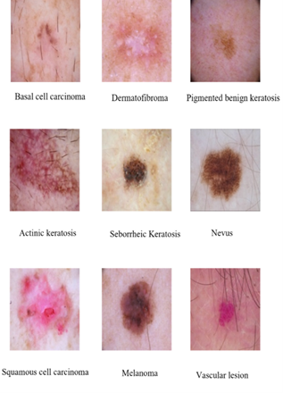
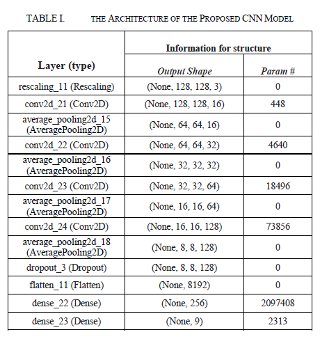
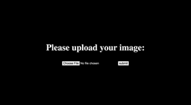

Methodologies
1. Data Source and Preprocessing
- The data used comes from the online platform Kaggle [12]. There are 6,857 images of nine kinds of skin cancer, namely Basal Cell Carcinoma, Actinic Keratosis, Dermatofibroma, Melanoma, Nevus, Seborrheic Keratosis, Squamous Cell Carcinoma, and Vascular Lesion.
- Each image is of size 600x450px. Some sample images of the nine kinds of skin cancers are attached in Fig
- The size of the images is changed to 128x128px so that they can be processed by the models with a low number of trainable parameters.
- Then, the pixel values of the images are divided by 255 for normalization, and the photos are split into a training and testing subset, respectively.
2. Proposed Approach
- CNN models are chosen because of their outstanding performance on image recognition tasks.
- To determine an ideal CNN network for the classification task, performances of the VGG models (both 16 and 19) built by the Visual Geometry Group at the University of Oxford [13] and a self-designed model are compared.
- The self-designed model consists of 13 layers, including rescaling, convolutional, pooling, and dense layers.
- The architecture of the proposed model is shown in Table:
- To build the model layer by layer, the Sequential function provided by TensorFlow is used.
- Firstly, as its name suggests, the rescaling layer rescales the RGB channel values of the input images from the range [0, 255] to the range [0,1].
- Then, four pairs of Conv2D and AveragePooling layers are used to extract features and reduce the parameters.
- The number of output filters is chosen to be 16, 32, 64, and 128, respectively, in the four Conv2D layers, and the height and width of the four 2D convolution windows are 3x3.
- Among the pooling methods, average pooling is chosen since it can retain features of input images better than max pooling.
- After the four pairs of Conv2D and AveragePooling layers, a dropout layer is added with a dropout probability of 0.3 to reduce the number of parameters and prevent overfitting.
- Lastly, a flattened layer and two dense layers are applied. The last dense layer has nine neurons, matching the number of skin cancer types.


3. Implementation Details
- Since the task involves comparing the three models and integrating the model with the highest accuracy into a web application, two sets of parameters are used.
- On the one hand, smaller batch sizes and epochs can speed up the training process without affecting the rank of the accuracy of the three models. Therefore, batch size=16 and epoch=5 as the first set of parameters is used.
- On the other hand, after an ideal model is determined, larger batch sizes and epochs are essential for more accurate prediction.
- Therefore, batch size=40 and epoch=30 are used as the second set of parameters. In both scenarios, Adam as the optimizer and sparse categorical cross-entropy as the loss function is chosen. The default learning rate is 0.0001, and the evaluation indicator is accuracy.
4. Application
- For the application part, the proposed model is deployed as a web application.
- The main tool used is Flask, a lightweight web framework written in Python. The HTML component of my application is rather simple, just a message prompting the user to upload the cancer image to be classified and an input form for uploading the image.
- One point worth noticing is that the image uploaded by the user needs to be processed before it is sent to the model for prediction.
- Specifically, it needs to be expanded in dimension by adding batch size as one of its dimensions so that it can be accepted by the model.
